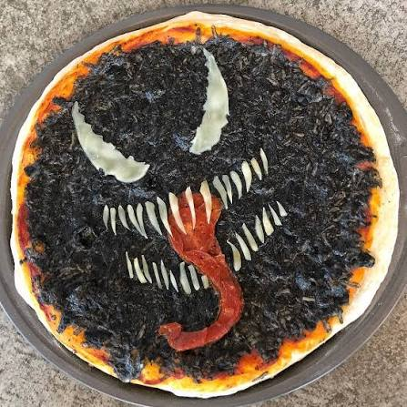

Venom é expulso de rodízio após restaurante registrar prejuízo biologicamente impossível
Publicado em por Eddie Brock

Um restaurante de Manhattan precisou encerrar as atividades mais cedo após receber um cliente que funcionários descreveram como “financeiramente insustentável”.
O cliente era Venom, que teria escolhido a opção de rodízio ilimitado e levado a expressão muito a sério.
Cozinha entra em estado de emergência
Funcionários afirmam que dezenas de pizzas desapareceram em poucos minutos.
O gerente tentou explicar que existiam limites razoáveis, mas Venom teria apontado para a placa escrita “rodízio ilimitado”.
Restaurante muda regulamento
Após o incidente, o estabelecimento alterou a promoção para: “rodízio ilimitado, exceto para simbiontes”.
Venom classificou a decisão como discriminação gastronômica.
Voltar para a página inicial